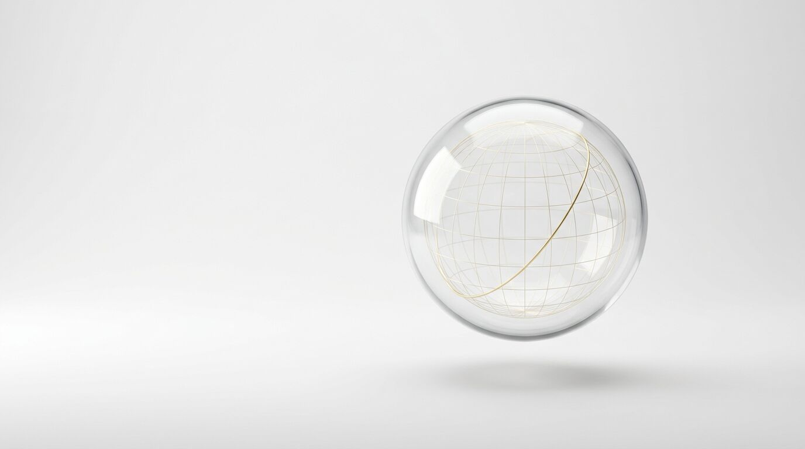

GEWU LAB · 浙江高考
看见，才会懂。
把高考里最难想象的那部分，变成你能转动、拖拽、亲手推演的实验。

没找到，换个词试试
格物，致知。
「格物」出自《大学》：推究事物的道理，才能获得真知。我们把高考里「看不见」的曲线、地球与战线，变成「看得见」。
对齐教材（数学人教A版、地理湘教版、历史统编版）· 指向考点，章末配高考题型检测 · 即开即用，手机、平板、电脑都一样。
GEWU LAB · 浙江高考
把高考里最难想象的那部分，变成你能转动、拖拽、亲手推演的实验。

没找到，换个词试试
「格物」出自《大学》：推究事物的道理，才能获得真知。我们把高考里「看不见」的曲线、地球与战线，变成「看得见」。
对齐教材（数学人教A版、地理湘教版、历史统编版）· 指向考点，章末配高考题型检测 · 即开即用，手机、平板、电脑都一样。